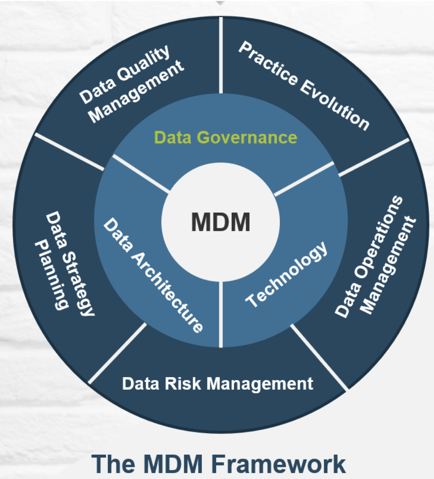

Master Data Managment (MDM)
About
Introduction
Synopsis
Liste des Formations
1
La qualité des données dans les sources de données
Objectifs
1.1
Jour 1
1.1.1
Introduction à la qualité des données
1.1.2
Les différents paramètres de qualité des données
L’exactitude (Précision)
La complétude (Exhaustivité)
La cohérence
L’utilité
La pertinence (Actualité)
La fiabilité (Unicité)
L’accessibilité
La sécurité
1.1.3
Les conséquences de la mauvaise qualité des données
1.1.4
Les avantages d’une bonne qualité des données
1.1.5
Les processus de gestion de la qualité des données
1.1.6
Les outils et technologies de gestion de la qualité des données
1.2
Jour 2
1.2.1
Évaluation de la qualité des données
1.2.2
Les différents paramètres d’évaluation de la qualité des données
1.2.3
Les outils et technologies d’évaluation de la qualité des données
1.2.4
La résolution des problèmes de qualité des données
1.2.5
Les outils et technologies de résolution des problèmes de qualité des données
1.3
Cas Pratique 2
1.3.1
Tâches à réaliser pour évaluer la qualité des données
1.3.1.1
Charger le jeu de données en Python et effectuer une première exploration
1.3.1.2
Évaluation de la précision
1.3.1.3
Évaluation de l’exhaustivité des données.
1.3.1.4
Évaluation de la cohérence des données.
1.3.1.5
Évaluation de l’actualité des données.
1.3.1.6
Évaluation de l’unicité des données.
1.3.1.7
Évaluation de la validité des données
1.3.1.8
Évaluation de la fiabilité des données
1.3.2
Tâches à réaliser pour une EDA :
1.4
Jour 3
1.4.1
Comment se fait l’Amélioration de la qualité des données
1.4.2
Les différents techniques d’amélioration de la qualité des données
1.4.3
Les outils et technologies d’amélioration de la qualité des données
1.4.4
La surveillance de la qualité des données
1.4.5
Les outils et technologies de surveillance de la qualité des données
1.5
Cas Pratique 3
2
Big Data, présentation de méthodes et solutions pratiques pour l'analyse des données volumineuses
Objectifs
2.1
Introduction
2.1.1
Définition du Big Data
2.1.2
Les caractéristiques du Big Data : Volume, Vélocité, Variété, Véracité, Valeur (les “5V”)
2.1.3
Importance du Big Data dans le contexte actuel
2.2
Module 1 : Fondements du Big Data
2.2.1
Architecture des systèmes Big Data
2.2.2
Les technologies de stockage
2.2.3
Les technologies de traitement
2.2.4
Les outils d’analyse
2.2.5
Les solutions de Cloud Computing pour le Big Data
2.3
Module 2 : Collecte et préparation des données
2.3.1
Les Méthodes de collecte de données volumineuses
2.3.2
Nettoyage des données : défis et techniques
2.3.3
Les Techniques de Normalisation et transformation des données
2.3.4
Gestion des données manquantes et valeurs aberrantes
2.3.4.1
Gestion des données manquantes :
2.3.4.2
Gestion des valeurs aberrantes :
2.4
Module 3 : Analyse et traitement des données volumineuses
2.4.1
Aperçu sur l’Analyse de Données en Temps Réel
2.4.2
Méthodes de réduction de dimension pour les données volumineuse
2.4.3
Introduction aux algorithmes d’apprentissage automatique pour le Big Data
2.4.4
Techniques d’analyse de texte et de traitement du langage naturel
2.5
Module 4 : Stockage et gestion des données en temps réel
2.5.1
Introduction aux bases de données en temps réel
2.5.2
Solutions pour la gestion des flux de données en temps réel
2.5.3
Traitement des données en streaming avec Apache Kafka
2.6
Module 5 : Visualisation et interprétation des résultats
2.6.1
Outils de visualisation de données pour le Big Data
2.6.2
Techniques de storytelling avec les données volumineuses
2.6.3
Communication efficace des résultats d’analyse
2.7
Module 6 : Sécurité et éthique dans le Big Data
2.8
Module 7 : Cas pratiques et études de cas
2.9
Conclusion
2.10
Évaluation
Karim Mezhoud
Master Data Managment
Master Data Managment
Karim Mezhoud
2023-07-21
About
